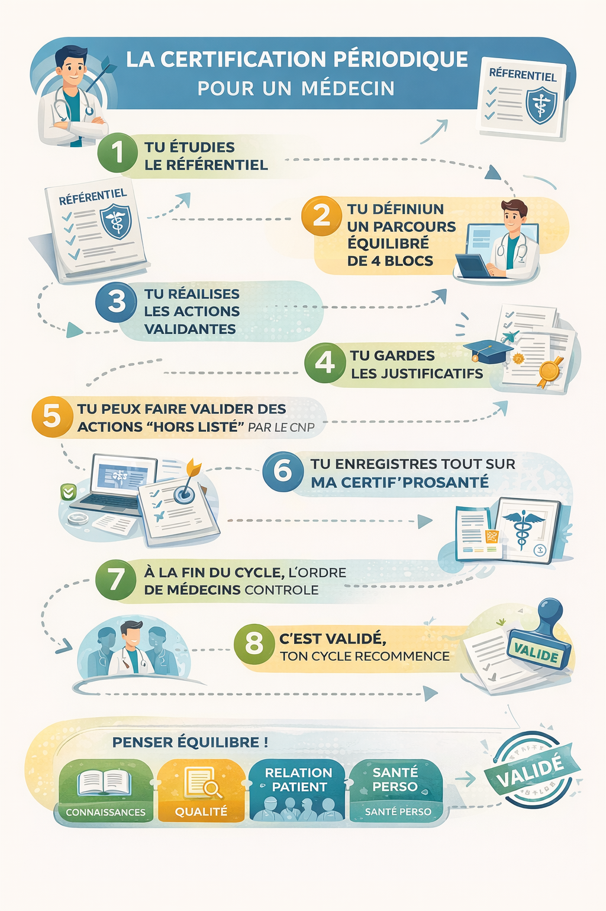
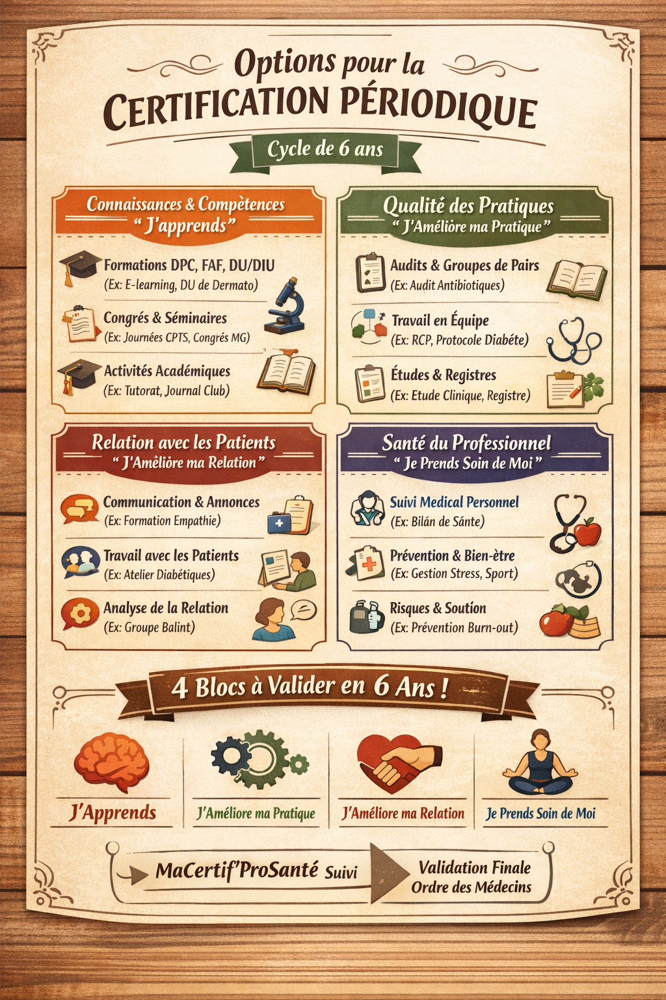

Wiki simple, clair et sans migraine
4 blocs
à équilibrer
6 ans
par cycle en principe
Des justificatifs
à conserver
La certification périodique, expliquée simplement
La certification périodique, ce n’est pas juste “faire un peu de formation”. C’est un parcours structuré, réparti dans 4 blocs, avec des actions à réaliser, des preuves à garder, un suivi sur MaCertif’ProSanté, puis une validation finale par l’Ordre.

Définition
C’est quoi, au juste ?
En version très simple : la certification périodique sert à vérifier qu’un professionnel de santé continue, dans le temps, à bien exercer.
Ce n’est pas juste de la formation
Le système ne regarde pas seulement si vous apprenez de nouvelles choses. Il regarde aussi si vous améliorez vos pratiques, votre relation avec les patients, et votre propre santé professionnelle.
C’est un parcours global
L’idée est d’avoir une vision plus complète du métier : savoirs, pratique réelle, relation humaine et équilibre personnel.
C’est un système de preuve
Faire une action, c’est bien. Pouvoir prouver qu’elle a été réalisée, c’est indispensable. Attestations, déclarations, justificatifs : tout compte.
À retenir :
la certification périodique, c’est un peu comme un carnet de progression
professionnel. Vous devez réaliser des actions dans différents domaines,
garder les preuves, puis faire valider l’ensemble à la fin du cycle.
Fonctionnement
Comment ça marche, concrètement ?
Voici la logique générale, en version claire et digeste.
1
Vous partez d’un référentiel
Vous ne partez pas de zéro. Il existe un référentiel qui indique quelles actions peuvent être prises en compte pour votre profession, voire votre spécialité.
2
Vous construisez un parcours équilibré
Il ne s’agit pas de tout mettre dans la case “formation”. Le parcours doit couvrir les 4 blocs.
3
Vous réalisez des actions validantes
Cela peut être une formation, un audit clinique, une RCP, une action avec des patients, une auto-évaluation de santé, une activité de prévention, etc.
4
Vous gardez les justificatifs
Attestation de participation, diplôme, justificatif universitaire, déclaration sur l’honneur, preuve d’activité… sans preuve, l’action peut être difficile à faire reconnaître.
5
Une action hors liste peut parfois être reconnue
Si une action pertinente n’est pas prévue dans la liste, il peut exister une possibilité de la faire reconnaître par le CNP.
6
Le suivi passe par MaCertif’ProSanté
Les actions validées ont vocation à alimenter votre espace personnel pour centraliser le suivi du parcours.
7
À la fin du cycle, l’Ordre contrôle
La validation finale du cycle n’est pas faite “au feeling” : elle relève du contrôle ordinal.
8
Quand c’est validé, un nouveau cycle recommence
Ce n’est pas un exercice unique dans une carrière. La logique est celle d’un suivi régulier dans le temps.
Les 4 blocs
Le cœur du système
Toute la logique de la certification périodique repose sur ces 4 grands blocs. L’objectif n’est pas de tout faire dans un seul domaine, mais d’avoir un parcours équilibré.
Connaissances & compétences
“Je continue à apprendre.”
Ce bloc concerne tout ce qui permet de rester à jour scientifiquement, techniquement et professionnellement.
- Formations DPC, FAF, DU, DIU
- Congrès, colloques, journées pro
- Tutorat, maîtrise de stage, journal club
- Activités académiques ou pédagogiques
Qualité des pratiques
“J’améliore ma pratique réelle.”
Ici, on est dans l’analyse du travail concret : qualité, sécurité, coordination, évaluation des pratiques.
- Audits cliniques
- Groupes de pairs
- RCP, staff, protocoles pluriprofessionnels
- Registres, études, démarches qualité
Relation avec les patients
“Je soigne mieux, humainement aussi.”
Ce bloc vise la qualité de la relation, de l’information, de l’écoute, de l’accompagnement et de la place du patient dans le soin.
- Communication et annonce
- Relation patient, relation numérique
- Actions avec associations d’usagers
- Groupes d’analyse centrés sur la relation
Santé du professionnel
“Je prends soin de moi pour bien soigner.”
C’est la grande nouveauté qui surprend souvent : votre santé compte aussi dans le parcours.
- Suivi médical personnel
- Auto-évaluation physique, psychique et sociale
- Prévention des risques pro
- Sport, prévention, équilibre de vie

Exemples concrets
À quoi ça peut ressembler dans la vraie vie ?
Voici des exemples très simples pour visualiser le type d’actions que l’on peut retrouver dans chaque bloc.
Bloc 1 — J’apprends
- Suivre une formation DPC sur un sujet clinique
- Participer à un congrès professionnel
- Valider un DU ou un DIU
- Encadrer un interne ou participer à un journal club
Bloc 2 — J’améliore ma pratique
- Réaliser un audit clinique
- Participer à un groupe de pairs
- Travailler sur un protocole pluriprofessionnel
- Contribuer à un registre ou à une démarche qualité
Bloc 3 — J’améliore la relation patient
- Faire une formation à l’annonce d’un diagnostic
- Participer à une action avec une association de patients
- Créer un support d’information patient
- Travailler sur des situations complexes en groupe Balint
Bloc 4 — Je prends soin de moi
- Déclarer un suivi médical personnel
- Faire une auto-évaluation de sa santé
- Suivre une action de prévention du burn-out
- Pratiquer régulièrement une activité physique
Important
Le détail exact des actions recevables peut varier selon la profession et parfois selon la spécialité. La philosophie générale est commune, mais les référentiels peuvent préciser des attentes différentes.
Piège classique
Penser que la certification périodique = uniquement du DPC. En réalité, le DPC peut compter, mais il ne résume pas tout le dispositif.
Bon réflexe
Garder au fil de l’eau vos attestations, preuves et justificatifs. Cela évite la panique administrative de dernière minute.
Mémo
La version ultra simple à retenir
1
Je regarde mon référentiel.
2
Je répartis mes actions dans les 4 blocs.
3
Je garde mes justificatifs.
4
Je renseigne mon parcours dans MaCertif’ProSanté.
5
À la fin du cycle, l’Ordre contrôle et valide.
FAQ
Questions qu’on se pose souvent
La certification périodique, c’est juste de la formation continue ?
Non. La formation continue en fait partie, mais la certification périodique va plus loin : elle inclut aussi la qualité des pratiques, la relation avec les patients et la santé du professionnel.
Est-ce qu’il faut tout faire d’un coup ?
Non. La logique est justement de construire un parcours sur la durée, pas de tout concentrer à la dernière minute.
Pourquoi les justificatifs sont-ils si importants ?
Parce que le système repose sur des actions traçables. Une action sans preuve peut être difficile à faire valoir au moment du contrôle.
Qui valide à la fin ?
La validation finale du cycle relève de l’Ordre concerné, après suivi du parcours et des éléments enregistrés.
Et si une action utile n’apparaît pas dans la liste ?
Selon les cas, une action “hors liste” peut parfois être soumise à reconnaissance par le CNP. Ce n’est donc pas un système totalement fermé.